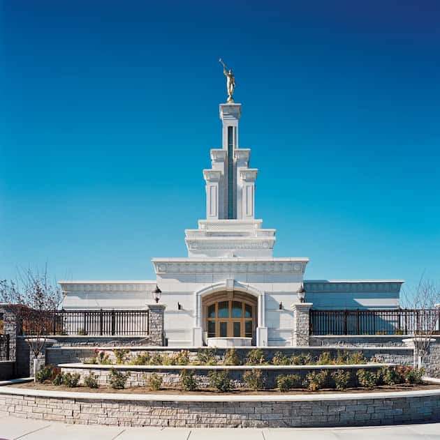
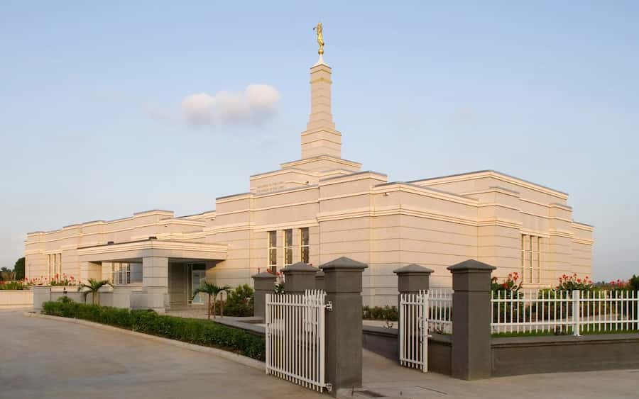
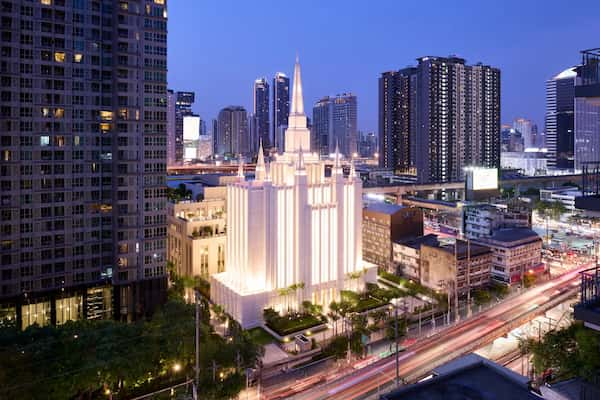
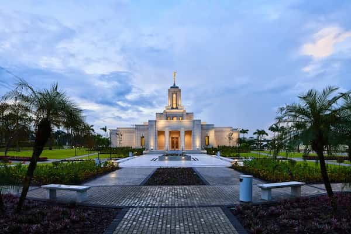
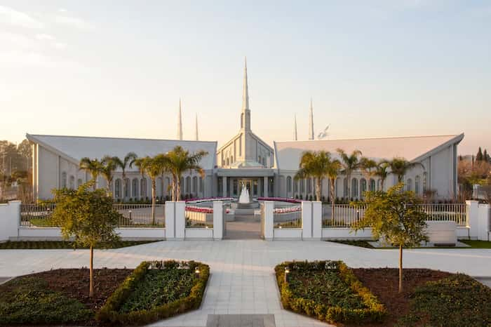
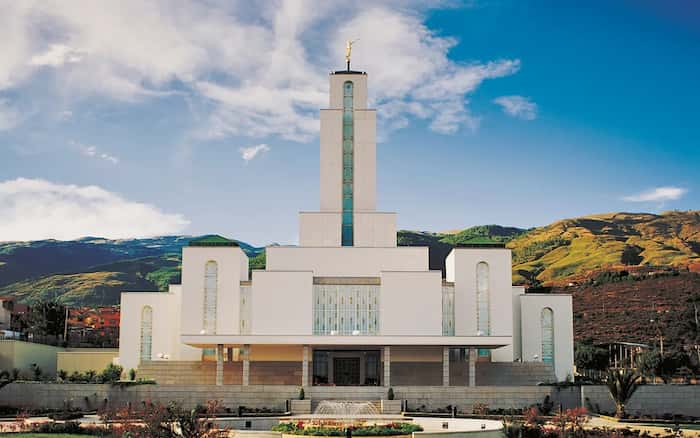
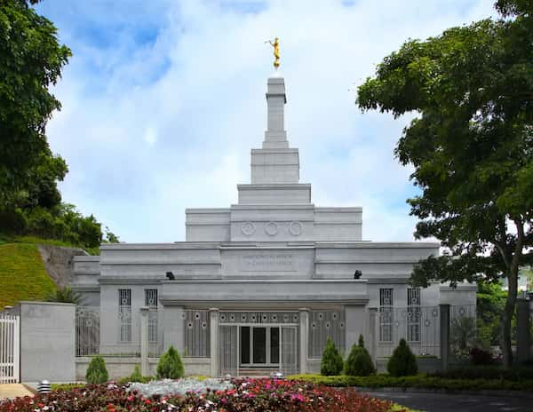
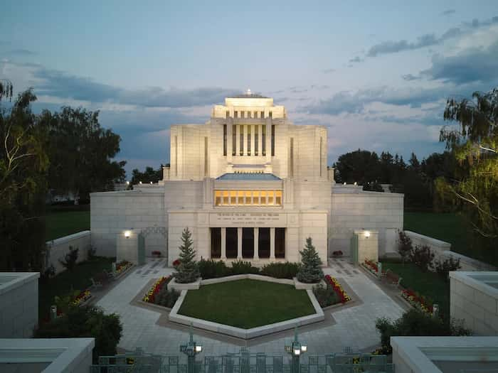
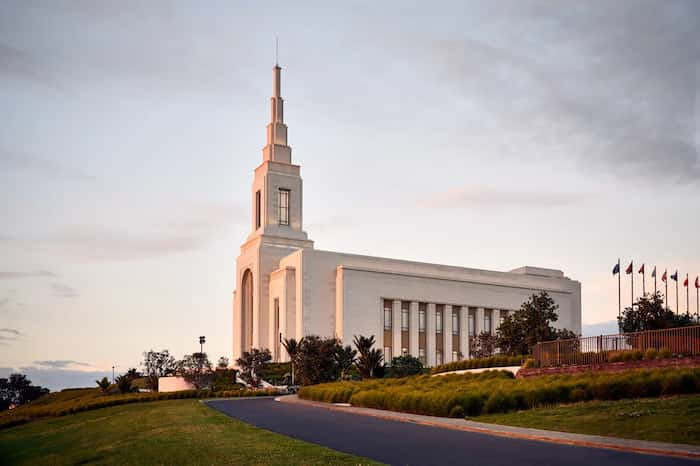
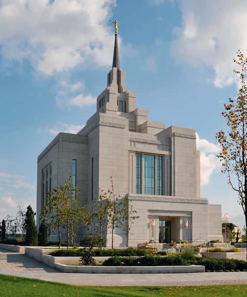

Columbia River Washington Temple

Aba Nigeria Temple

Bangkok Thailand Temple

Belém Brazil Temple

Buenos Aires Argentina Temple

Cochabamba Bolivia Temple

Caracas Venezuela Temple

Cardston Alberta Temple

Auckland New Zealand Temple

Kyiv Ukraine Temple